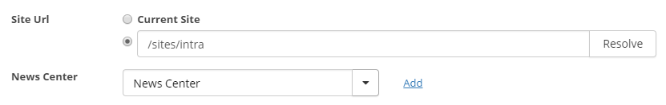

Omnia Intranet - January 2018
Features
Cross Site Collection News
It is possible to show news from another site collection in the News Viewer.

Improved RSS Reader
Some RSS feeds that were not 100% RSS compliant did not work in the RSS Reader. We now support many exceptions from the strict RSS 2.0 format.
A possibility to open RSS feeds in a new window has been added to the RSS Reader.
Bug Fixes
- Fixed issue with End Publishing Time for scheduled news not working as expected in the News Viewer.
- It was not possible to delete a navigation node in manage content that pointed to a page in a publishing site that was deleted. This is now possible.
- Graphical design glitch in News Viewer in IE 11 fixed.
- The possibility to create O365 groups in SharePoint 2013/2016 is now hidden from the UI.
- System log is no longer filled up with non-relevant SharePoint Context errors.
- Problem with the info icon in Document Rollup when using Hybrid Search fixed. The icon will be hidden for external documents.
- Banner preview and published version is now exactly the same.
- Some disabled controls in IE 11 was possible to select from. This has been fixed.
- Fixed problem with using being redirected to the start page when pressing enter in Date/Time picker and search box in news center.
- Fixed issue with paging when clicking back and forth in the RSS Reader.
- Fixed scrollbar issue in My Links in Firefox.
- Fixed graphical issues with color picker in Firefox.
- Fixed graphical issue in Firefox on Quick Polls diagram.
- Fixed double scrollbar issue in IE 11 when using the Zoom function in the web browser.
- Fixed problem when editing and publishing the start page node in a newly created publishing portal.
- Fixed issue with accessibility feature now working when tabbing to the Page Properties control in a page in IE 11.
January 2018 Patch 1 (1.0.9828)
- Fixed performance problem when using recurrent events in aggregated calendar.
- Fixed issue with My Links navigation not loading links the first time if "ALL LINKS" was selected by default.
- Fixed problem that could happen when moving a page to another publishing site in Manage Content.
- Fixed graphical issue with the banner view "Image on right".
- Fixed issue that some customers experienced in Manage Conten with a 405 error in the console.